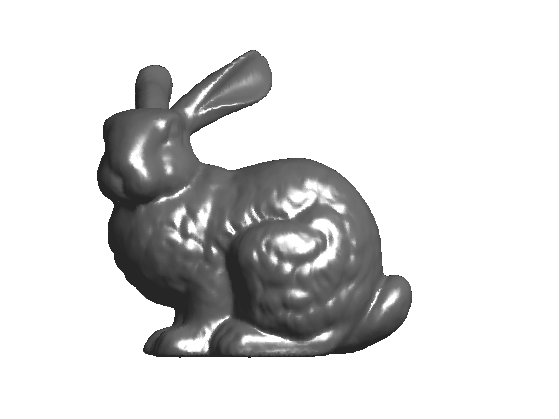
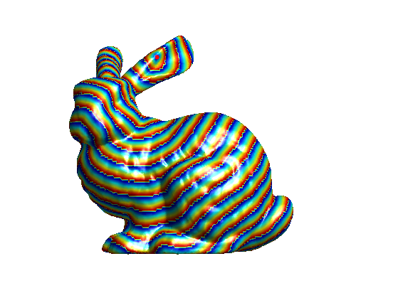
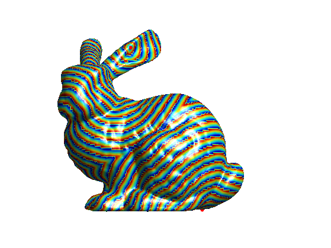
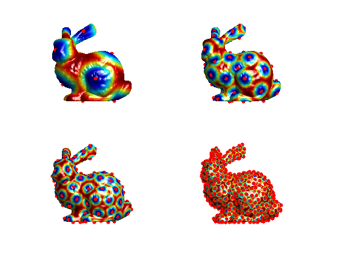
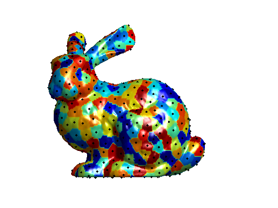
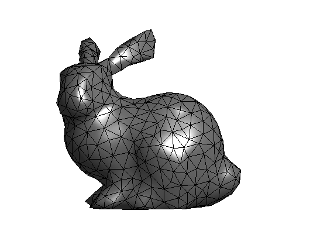
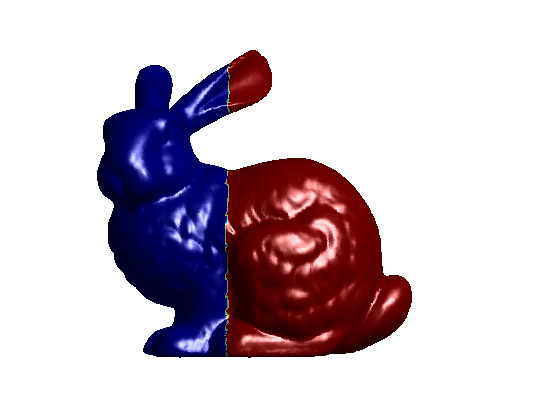
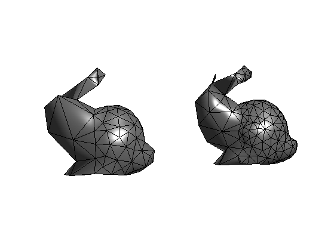
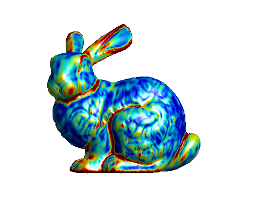
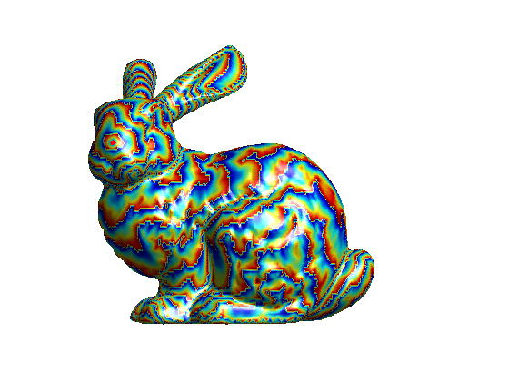

Geodesic Surface Remeshing
This tour explores geodesic remeshing of surfaces.
Contents
This method is introduced in
Geodesic Remeshing Using Front Propagation Gabriel Peyré and Laurent Cohen, International Journal on Computer Vision, Vol. 69(1), p.145-156, Aug. 2006.
Installing toolboxes and setting up the path.
You need to download the following files: signal toolbox, general toolbox and graph toolbox.
You need to unzip these toolboxes in your working directory, so that you have toolbox_signal, toolbox_general and toolbox_graph in your directory.
For Scilab user: you must replace the Matlab comment '%' by its Scilab counterpart '//'.
Recommandation: You should create a text file named for instance numericaltour.sce (in Scilab) or numericaltour.m (in Matlab) to write all the Scilab/Matlab command you want to execute. Then, simply run exec('numericaltour.sce'); (in Scilab) or numericaltour; (in Matlab) to run the commands.
Execute this line only if you are using Matlab.
getd = @(p)path(p,path); % scilab users must *not* execute this
Then you can add the toolboxes to the path.
getd('toolbox_signal/'); getd('toolbox_general/'); getd('toolbox_graph/');
Farthest Point Sampling
An uniform sampling of points on a surface is obtained using a greedy farthest point sampling.
Load a 3D mesh.
clear options; name = 'bunny'; [vertex,faces] = read_mesh(name); n = size(vertex,2); options.name = name;
Display it.
clf; plot_mesh(vertex,faces, options);
Pick a first point.
landmarks = [100];
Compute the geodesic distance to this point.
[D,Z,Q] = perform_fast_marching_mesh(vertex, faces, landmarks);
Display the geodesic distance to the point.
clf; hold on; options.face_vertex_color = mod( 20*D/max(D),1 ); plot_mesh(vertex,faces, options); colormap jet(256); h = plot3(vertex(1,landmarks), vertex(2,landmarks), vertex(3,landmarks), 'r.'); set(h, 'MarkerSize', 20);
Select as the next sampling point the farthest point.
[tmp,landmarks(end+1)] = max(D);
Update the distance map using a local propagation.
options.constraint_map = D; [D1,Z,Q] = perform_fast_marching_mesh(vertex, faces, landmarks,options); D = min(D,D1);
Display the update distance map.
clf; hold on; options.face_vertex_color = mod( 20*D/max(D),1 ); plot_mesh(vertex,faces, options); colormap jet(256); h = plot3(vertex(1,landmarks), vertex(2,landmarks), vertex(3,landmarks), 'r.'); set(h, 'MarkerSize', 20);
Exercice 1: (check the solution) Perform the farthest point sampling of m=500 points.
exo1;
Geodesic Delaunay Triangulation
An intrinsic triangulation of the point is obtained using the geodesic Delaunay triangulation.
Compute the voronoi map Q of the segmentation.
[D,Z,Q] = perform_fast_marching_mesh(vertex, faces, landmarks);
Display the update distance map.
[B,I,J] = unique(Q); v = randperm(m)'; J = v(J); clf; hold on; options.face_vertex_color = J; plot_mesh(vertex,faces, options); colormap jet(256); h = plot3(vertex(1,landmarks), vertex(2,landmarks), vertex(3,landmarks), 'k.'); set(h, 'MarkerSize', 15);
Count the number d(i) of different voronoi indexes for each face i.
V = Q(faces); V = sort(V,1);
V = unique(V', 'rows')';
d = 1 + (V(1,:)~=V(2,:)) + (V(2,:)~=V(3,:));
Select the faces with 3 different indexe, they corresponds to geodesic Delaunay faces.
I = find(d==3); I = sort(I);
Build the Delaunay faces set.
z = zeros(n,1); z(landmarks) = (1:m)'; facesV = z(V(:,I));
Position of the vertices of the subsampled mesh.
vertexV = vertex(:,landmarks);
Re-orient the faces so that they point outward of the mesh.
options.method = 'slow';
options.verb = 0;
facesV = perform_faces_reorientation(vertexV,facesV, options);
Display the sub-sampled mesh.
clf;
options.face_vertex_color = [];
plot_mesh(vertexV,facesV, options);
shading faceted;
 Spacially Varying Remeshing
It is possible to seed more point on a given part of the mesh.
Create a density function by designing an isotropic metric. Here we use a metric that is slower in the left part.
W = ones(n,1); W(vertex(1,:)<median(vertex(1,:))) = .4; options.W = W;
Display the speed function.
clf; hold on; options.face_vertex_color = W; plot_mesh(vertex,faces, options); colormap jet(256);
Perform front propagation using this speed function.
landmarks = [5000]; options.constraint_map = []; [D,Z,Q] = perform_fast_marching_mesh(vertex, faces, landmarks, options);
Display the distance map.
clf; hold on; options.face_vertex_color = mod( 20*D/max(D),1 ); plot_mesh(vertex,faces, options); colormap jet(256); h = plot3(vertex(1,landmarks), vertex(2,landmarks), vertex(3,landmarks), 'r.'); set(h, 'MarkerSize', 20);
Exercice 2: (check the solution) Perform a spacially adative remeshing.
exo2;
Feature Sensitive Remeshing
A better remeshing quality is obtained by sampling more densly sharp features. This is achieved using a spatially varying metric, so that the front propagate slowly near regions of high curvature.
Compute the curvature of the mesh.
[Umin,Umax,Cmin,Cmax,Cmean,Cgauss,Normal] = compute_curvature(vertex,faces,options);
Compute the total curvature.
C = abs(Cmin)+abs(Cmax);
Display it.
clf; hold on; options.face_vertex_color = min(C,.1); plot_mesh(vertex,faces, options); colormap jet(256);
Exercice 3: (check the solution) Design a metric W so that the sampling is densed in area where C is large.
exo3;
Exercice 4: (check the solution) Use such a metric to perform feature sensitive remeshing. Tune the metric to reduce as much as possible the Hausdorff approximation error.
exo4;